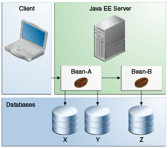

Updating Multiple Databases
The Java EE transaction manager controls all enterprise bean transactions except for bean-managed JDBC transactions. The Java EE transaction manager allows an enterprise bean to update multiple databases within a transaction. Figure 52-2 and Figure 52-3 show two scenarios for updating multiple databases in a single transaction.
In Figure 52-2, the client invokes a business method in
Bean-A. The business method begins a transaction, updates Database X,
updates Database Y, and invokes a business method in Bean-B. The
second business method updates Database Z and returns control to the
business method in Bean-A, which commits the transaction. All three
database updates occur in the same transaction.
In Figure 52-3, the client calls a business method in
Bean-A, which begins a transaction and updates Database X. Then
Bean-A invokes a method in Bean-B, which resides in a remote Java EE
server. The method in Bean-B updates Database Y. The transaction
managers of the Java EE servers ensure that both databases are updated
in the same transaction.
